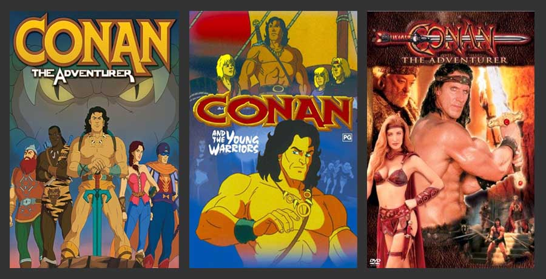
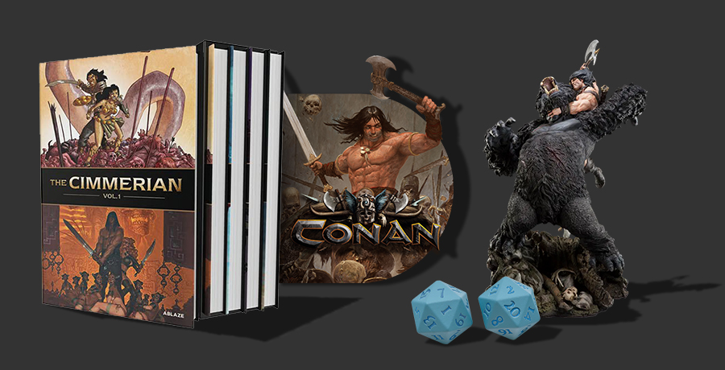

Adaptaciones
Adaptaciones cinematográficas
Cine
Existen 3 adaptaciones en el cine:
Conan el Bárbaro (1982): Dirigida por John Milius y protagonizada por Arnold Schwarzenegger en el papel principal, esta película es la adaptación más famosa de Conan.
La película comienza con el joven Conan, un niño que es testigo del brutal asesinato de sus padres a manos de Thulsa Doom, un poderoso líder sectario y hechicero que también es responsable de la esclavitud de Conan en su infancia. Conan jura vengarse y, con el tiempo, se convierte en un formidable guerrero. La trama sigue su búsqueda para enfrentarse a Thulsa Doom y rescatar a una princesa que ha sido secuestrada. A lo largo de su viaje, se encuentra con una serie de personajes memorables y enfrenta desafíos brutales, lo que lleva a un enfrentamiento épico entre él y su enemigo.
Conan el Destructor (1984): Esta secuela de Conan el Bárbaro también está protagonizada por Arnold Schwarzenegger y dirigida por Richard Fleischer. En esta secuela, Conan es reclutado por la malvada reina Taramis para ayudarla en una peligrosa misión. Su tarea es escoltar a la princesa Jehnna a un lugar misterioso y recuperar un objeto mágico que otorgará a la reina poderes sobrenaturales. A lo largo de la película, Conan se encuentra con nuevos aliados y enemigos, incluido el villano Bombaata. La película se desarrolla en un mundo lleno de criaturas y desafíos, y Conan debe superar obstáculos mortales para cumplir con su misión.
Conan el Bárbaro (2011): En esta película, Jason Momoa interpreta a Conan en un reinicio de la franquicia. Dirigida por Marcus Nispel. La película sigue a un joven Conan mientras busca vengar la muerte de su padre a manos de un despiadado hechicero llamado Khalar Zym. La trama presenta los primeros días de Conan como un guerrero en ascenso y su búsqueda de venganza, que lo lleva a un conflicto mortal con Khalar Zym. A lo largo de la película, Conan se enfrenta a peligrosas criaturas y forma alianzas inesperadas mientras se embarca en su viaje de venganza en un mundo lleno de magia y misterio.
Series
Tres son las series televisivas que han relatado historias sobre Conan:
- Conan el Aventurero: fue una popular serie de animación estadounidense producida por Jetlag Productions y Sunbow Productions, estrenada el 1 de octubre de 1992 llegando a los 64 episodios y concluyendo exactamente dos años después, el 1 de octubre de 1994.
- Conan and the Young Warriors: fue una serie de animación emitida en 1994 durante 13 capítulos. DiC Entertainment la produjo y Columbia Broadcasting System la emitió como una secuela de Conan el aventurero. Continúa tras el final de la otra serie cuando Conan derrota a Wrath-Amon y su familia retorna a la vida después de que fueran convertidos en piedra.
- Conan: The Adventurer: fue una serie de televisión emitida desde el 22 de septiembre de 1997 durante 22 episodios. Está protagonizada por el culturista alemán Ralf Moeller como actor principal y Danny Woodburn como Otli. La trama es bastante diferente de la historia de Howard, ya que por ejemplo Conan es miembro de un grupo de aventureros.
Juegos
Videojuegos
Siete videojuegos han sido lanzados basándose en Conan:
- En 1984, Datasoft lanzó Conan: Hall of Volta para las series de ordenadores Apple II, familia Atari de 8 bits y Commodore 64.41
- En 1989, Mindscape publicó para el sistema Nintendo Entertainment, Conan.
- En 1991, Mindscape lanzó Conan: The Mysteries of Time para el sistema Nintendo Entertainment. Fue una versión del juego Myth: History in the Making que, programado por System 3, fue rebautizado.
- En 1991, Virgin Interactive distribuyó el juego creado por Synergistic, Conan: The Cimmerian para Commodore Amiga y MS-DOS.42
- En 2004, TDK Mediactive publicó Conan, un juego en perspectiva de tercera persona desarrollado por Cauldron Software para Windows y videoconsolas.
- En 2007, THQ y Nihilistic lanzaron Conan, otro juego en perspectiva de tercera persona para PlayStation 3 y Xbox 360.
- En 2008, Funcom lanzó Age of Conan: Hyborian Adventures, un videojuego de rol multijugador masivo en línea creado por Funcom y que permite a los jugadores vivir en el mundo de Hiboria e incluso crear sus propias ciudades.
- En 2017, Funcom lanzó Conan Exiles, un videojuego de supervivencia en el que el personaje creado por el jugador es rescatado de la muerte por el mismísimo Conan, antes de comenzar su aventura por La Tierra del Exilio.
Juegos de rol
Conan el Bárbaro también ha sido adaptado a juegos de mesa de rol a lo largo de los años:
- Conan: El Juego de Rol de Espada y Magia (1985): Este fue uno de los primeros juegos de rol basados en Conan. Fue publicado por TSR, la misma compañía detrás de Dungeons & Dragons. Los jugadores pueden crear personajes en el mundo de Conan y participar en aventuras épicas.
- Conan: El Juego de Rol (2004): Este juego de rol fue publicado por Mongoose Publishing y se basó en la versión de Conan del autor Robert E. Howard. Los jugadores pueden encarnar a personajes como bárbaros, hechiceros y ladrones mientras exploraban el mundo de Hyboria y se enfrentaban a peligrosos enemigos.
- Conan: Adventures in an Age Undreamed Of (2017): Publicado por Modiphius Entertainment, este juego de rol utiliza el sistema "2D20" y permite a los jugadores sumergirse en el mundo de Conan. Ofrece una amplia gama de suplementos y aventuras que exploran diferentes aspectos de Hyboria.
- Conan: El Juego de Tablero (2016): Este juego de mesa cooperativo permite a los jugadores asumir los roles de los héroes de Conan y aventurarse en misiones épicas. El juego incluye miniaturas detalladas y una variedad de escenarios inspirados en las historias de Conan.
- Conan: Beyond the Monolith (2020): Este juego de mesa táctico presenta escenarios de batalla en los que los jugadores pueden dirigir a los personajes de Conan y sus enemigos en combates estratégicos. El juego ofrece una experiencia de enfrentamiento en el mundo de Conan.